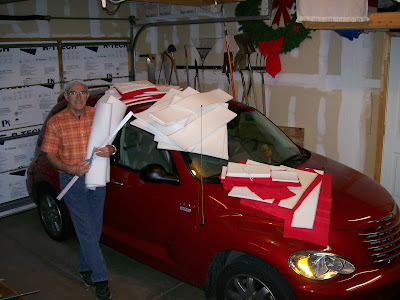

PT versatility
5/26/2009
{kind=link}

One of the problems with selling lined and padded custom carrying cases is SPACE. This week I have orders for four cases in three sizes. Only my garage has the room I need to roll out foam and fabric (on an unseen table to the left) when cutting to size. On this day I was using my car as a place to lay the pieces until I set up a mini-spray booth so I could glue the fabric to the foam. Adelia laughed when she happened to step through the door, took in the sight, and commented, "Now there's a picture for your blog!" I replied, "Well, get the camera." She did - and now you see part of what I have to go through to prep materials for lining a case.It was exactly a year ago this week when David Pendleton asked me about the possibility of getting some more cases for his figures. I thought I had retired from that facet of my career since my shop is far too small to handle such jobs. But I decided to temporarily bring the cases back and use my garage as workspace. I thought it would only be for a couple weeks. Now, here I am - one year later, still unable to park but one vehicle in my garage due to my case "workshop". If it could talk, even the PT would complain. I told Adelia this morning I think it's about time consider the wisdom of re-retiring from that portion of my shop career!